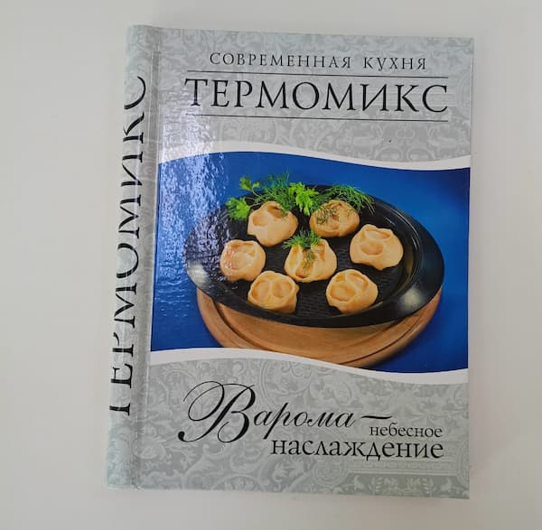
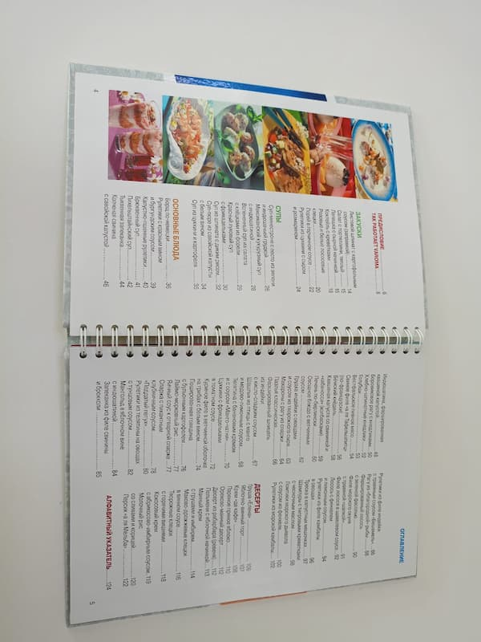
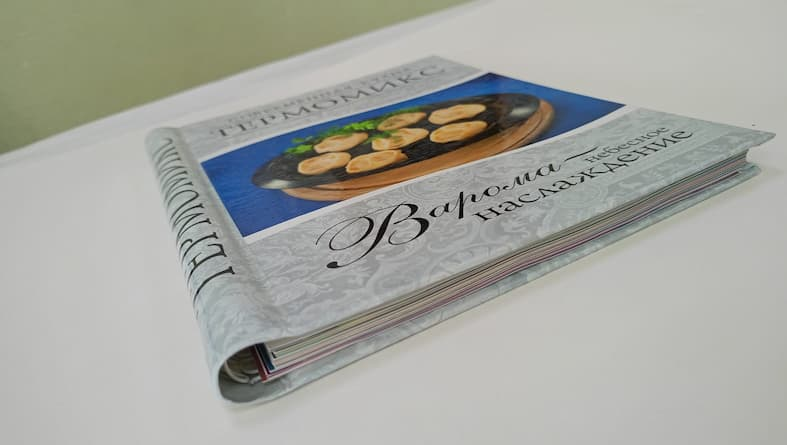

Твердый переплет со скрытой пружиной – это вершина полиграфического искусства, сочетающая в себе прочность и элегантность классического переплета с удобством раскрытия на 360 градусов, характерного для пружинных изданий. Этот тип переплета предлагает беспрецедентную свободу использования, позволяя полностью раскрыть книгу, не боясь повредить корешок или потерять страницы.
Секрет кроется в особой конструкции. Вместо традиционного сшивания блока, страницы крепятся к обложке с помощью скрытой пружины, деликатно интегрированной внутрь корешка. Эта пружина практически невидима снаружи, не нарушая эстетики твердой обложки. Результат – книга, которая выглядит солидно и респектабельно, но при этом обеспечивает исключительную функциональность.

Область применения книг в твердом переплете со скрытой пружиной чрезвычайно широка. Они идеально подходят для кулинарных книг, где удобство полного раскрытия страницы имеет решающее значение. Прекрасно подойдут для альбомов, портфолио, корпоративных отчетов и презентационных материалов, демонстрируя внимание к деталям и высокий статус компании. Даже ежедневники и блокноты приобретают новый уровень комфорта и практичности в таком исполнении.
Представьте себе книгу рецептов, лежащую на кухонном столе, полностью раскрытую на нужной странице, позволяющую легко следовать инструкциям, не боясь ее закрытия. Или технический справочник, разложенный на верстаке, позволяющий сверяться с чертежами, не придерживая страницы руками. В сфере образования, такой переплет идеален для учебников, тетрадей с практическими заданиями, конспектов лекций, позволяя ученикам и студентам удобно работать с материалом, делая заметки и пометки прямо в книге.
Изысканный внешний вид и безупречная функциональность делают книги в твердом переплете со скрытой пружиной ценным приобретением и превосходным подарком. Они подчеркивают важность содержащейся информации и дарят приятные тактильные ощущения, превращая чтение и использование книги в настоящее удовольствие.
Сочетая в себе прочность и долговечность классического твердого переплета с гибкостью и практичностью пружинного, этот формат предлагает уникальный опыт чтения и использования. Жесткая обложка надежно защищает страницы от повреждений, обеспечивая долговечность книги, в то время как пружинный механизм позволяет раскрывать ее на 360 градусов, что особенно удобно при работе с крупными форматами, схемами, чертежами или иллюстрациями.

Твердый переплет на пружине – это не просто книга, это инструмент, созданный для удобства и эффективности. Он сочетает в себе лучшее из двух миров, предлагая пользователю надежность, долговечность и функциональность в одном стильном и практичном формате. От кулинарных шедевров до сложных технических проектов, такая книга станет незаменимым помощником в любом деле.

Типография «Лазурь» предлагает своим заказчикам этот инновационный вид переплета как часть нашего широкого ассортимента полиграфических услуг. Мы вкладываем душу в каждое изделие, создавая не просто книги, а настоящие произведения искусства, которые будут радовать своих владельцев долгие годы.
Наши мастера обладают богатым опытом работы с данным типом переплета и готовы воплотить в жизнь любые ваши идеи. Мы гарантируем:
Доверьте создание ваших книг профессионалам. Свяжитесь с нами прямо сейчас, чтобы обсудить ваш проект!